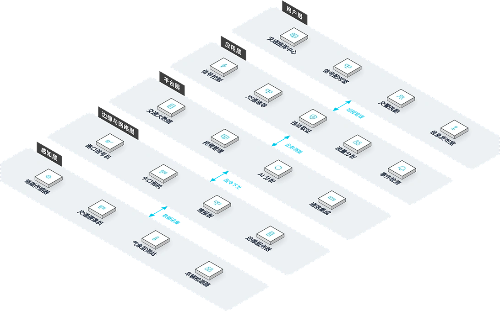

面向城市交通管理部门与交通基础设施建设方，提供覆盖信号控制、视频监控、违章检测、流量分析、诱导发布的全场景智能交通管理解决方案，解决路口拥堵严重、交通违法行为多、交通数据利用不足的核心痛点，提升道路通行能力与交通安全水平。
方案概述
为城市交通管理部门与交通基础设施建设方提供覆盖信号控制、视频监控、违章检测、流量分析、诱导发布的全场景智能交通管理解决方案，解决路口拥堵严重、交通违法行为多、交通数据利用不足的问题，提升道路通行能力与交通安全水平。
适用对象：城市交通管理部门、交通基础设施建设方、高速公路运营方。
- 兼容多种国内外主流信号机品牌，保护已有投资
- AI 视频分析无需破坏路面埋设线圈，施工周期短
- 开放数据接口支持与城市交通指挥中心、地图服务商对接
- 已参与Mile 2 综合交通枢纽项目、拉各斯轻轨蓝线五期项目、卡诺火车站项目等项目
收益：道路通行能力提升，交通事故减少，公共交通服务优化。
业务挑战
在城市交通管理中，客户常面临路口拥堵常态化、违法行为频发、公共交通服务弱的顽疾，亟需一套兼容已有信号设施、以数据驱动的全场景交通管理方案。
路口拥堵严重
固定信号配时无法适应流量变化，高峰时段车辆排队长。
违法行为频发
闯红灯、超速、逆行依赖人工执法，覆盖面有限。
交通数据沉睡
路口流量数据未充分利用，优化决策缺乏数据支撑。
公共交通弱势
公交车辆无法优先通行，准点率低，乘客体验差。
通行效率与执法覆盖双降
信号配时脱离实际流量、违法取证依赖人工，高峰拥堵加剧、事件处理与执法效率下降，市民出行体验持续恶化。
兼容已有设施
需要兼容多种主流信号机品牌，保护已有投资。
数据开放对接
需要开放数据接口，与指挥中心、地图服务商对接共享。
典型场景：
适用角色：交通工程师、交警指挥人员、道路运维人员。
方案架构
智慧交通采用五层业务拓扑：交通指挥中心、信号配时室等在各自办公室通过信号控制、交通诱导等应用开展业务，依托平台层统一调度；路口信号机、卡口相机等边缘设备部署于现场，就近接入地磁传感器、交通摄像机等感知设备，数据逐层汇聚、指令逐层下达，实现从管理办公室到现场设备的全链路贯通。

业务化布局：用户层为交通指挥中心、信号配时室等管理办公室；应用层承载日常业务功能；平台层提供交通大数据、视频管理等能力；边缘与网络层为路口信号机、卡口相机等现场接入位置；感知层为地磁传感器、交通摄像机等现场部署的设备。父子层级上下贯通，兄弟节点左右并列。
核心模块
信号控制
兼容多种国内外主流信号机品牌，支持远程配时调控。
AI 视频分析
无需破坏路面埋设线圈即可检测流量与违章，施工周期短。
违章检测
闯红灯、超速、逆行自动抓拍取证，扩展执法覆盖面。
诱导发布
路况信息经诱导屏与对外接口实时发布。
公交优先
公交车辆检测自动延长绿灯，提升准点率。
集成能力：
- 兼容多种国内外主流信号机品牌
- AI 视频分析无需破坏路面埋设线圈
- 开放数据接口支持与城市交通指挥中心、地图服务商对接
优势与交付
我们以 AI 视频分析与多品牌兼容能力，为城市交通提供通行能力提升与数据驱动决策的价值，并通过点位勘察、信号调优与持续优化的交付服务保障落地。
差异化优势
兼容性强
兼容多种国内外主流信号机品牌，保护已有投资，新旧设备无缝协作。
施工便捷
AI 视频分析无需破坏路面埋设线圈，施工周期短、维护成本低。
数据开放
开放数据接口，与城市交通指挥中心、地图服务商对接，数据价值释放。
工程经验丰富
已参与Mile 2 综合交通枢纽项目、拉各斯轻轨蓝线五期项目及卡诺火车站项目等项目，交通领域实施经验丰富。
信号智能调优
基于流量数据自动优化配时方案，通行效率持续提升。
多场景覆盖
适配路口信号控制、交通监测、诱导发布、公交优先等多种交通管理场景。
实施流程
需求调研
梳理路口现状与管理目标。
点位勘察
确定检测、信号与诱导点位。
设备安装
检测器、信号机、诱导屏安装。
平台部署
信号控制平台部署配置。
信号调优
基于流量数据优化配时方案。
培训交付
管理人员培训与上线运行。
服务保障
客户价值
道路通行能力提升，交通事故减少，公共交通服务优化，为城市交通管理提供数据支撑和决策依据。
一年质保
信号配时持续优化
远程技术支持
定期巡检维护
客户案例
Mile 2 综合交通枢纽项目
背景：Mile 2 综合交通枢纽项目建设工程。
挑战：枢纽区域交通流量大、组织复杂，需要一体化的智能化系统支撑。
方案：参与弱电与智能化系统建设。
成果：完成枢纽智能化系统建设，积累大型交通工程实施经验。
拉各斯轻轨蓝线五期项目
背景：尼日利亚拉各斯轻轨蓝线五期项目工程。
挑战：轨道交通工程系统复杂，智能化子系统众多，集成要求高。
方案：参与弱电与智能化系统建设。
成果：按期完成建设任务，扩展了公司在轨道交通领域的实施经验。
卡诺火车站项目
背景：尼日利亚卡诺火车站建设工程。
挑战：火车站人流车流密集，需要完善的智能化管理系统。
方案：参与弱电与智能化系统建设。
成果：完成相关系统建设，形成交通场站工程的实施能力。